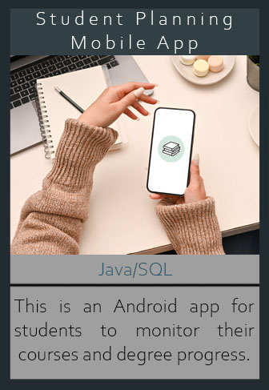

Student Planning Mobile Application
 OverviewThis is an Android Mobile Application of a student degree planner. The purpose of this application is to allow students to have a degree planner at their fingertips. There are planners and apps for planning daily activities or tracking diets, but not many are specifically for degree planning. The degree planner includes a login screen that allows students to log in with their username and password to view the data associated with them.
Before creating the code for this application, I created a class diagram to map out the models in my Model-View-Controller framework. Along with creating a class diagram, I created a low-fidelity (wireframe) rendering of each screen of the app. Once the wireframe was completed, I created high-fidelity (layout mockups) designs of the screens. These diagrams and renderings were all created in Adobe Photoshop.
The app provides the ability to input information about the student's terms, courses, and assessments. The details of terms includes the term's name, start and end dates, and associated courses. The details of courses includes the course's name, start and end dates, progress status, course instructor's contact information, option to add notes, and associated assessments. The details of assessments includes the assessment's name, start and end date, and assessment type (such as an Objective or Performance Assessment).
The application will also allow the students to view a list of all their registered terms, courses, and assessments. For the list of courses and assessments, the details of those lists contain the name of the course or assessment and the start and end dates. The list is ordered by start date in ascending order. The course list screen includes a search bar for users to filter through the list.
The application will include options for the student to input information about their terms, courses, and assessments. The application will also allow students to set alerts of start and end dates for courses and assessnebts that they want to track and an option to add and share notes of the courses they are taking. The share notes options allows students to send saved notes from the appliation through text messages, a Google Drive, e-mail, or Bluetooth.
Takeaway
This is my first time creating a mobile application. Most of my projects have been for desktops, so I've never had to use an emulator to run my projects. The project had similar aspects as the Bike Inventory Management System, so I was able to use my previous knowledge on this project. I didn't realize how complex creating a mobile app was until this project. I learned that menu items require its own separate code and XML layout, the importance of constraints, creating adapters, and creating my own database within the program. Overall, it has expanded my knowledge in Java, SQLite, and mobile app development.
Tools
● Android Studio Dolphin
● SQLite
● Adobe Photoshop 2023
Language(s)
● Java
● SQL
GitHub Repo
Class Diagram

Wireframe
Layout Mockup
Project Output
◁ Class Roster System Coffee Shop Database ▷